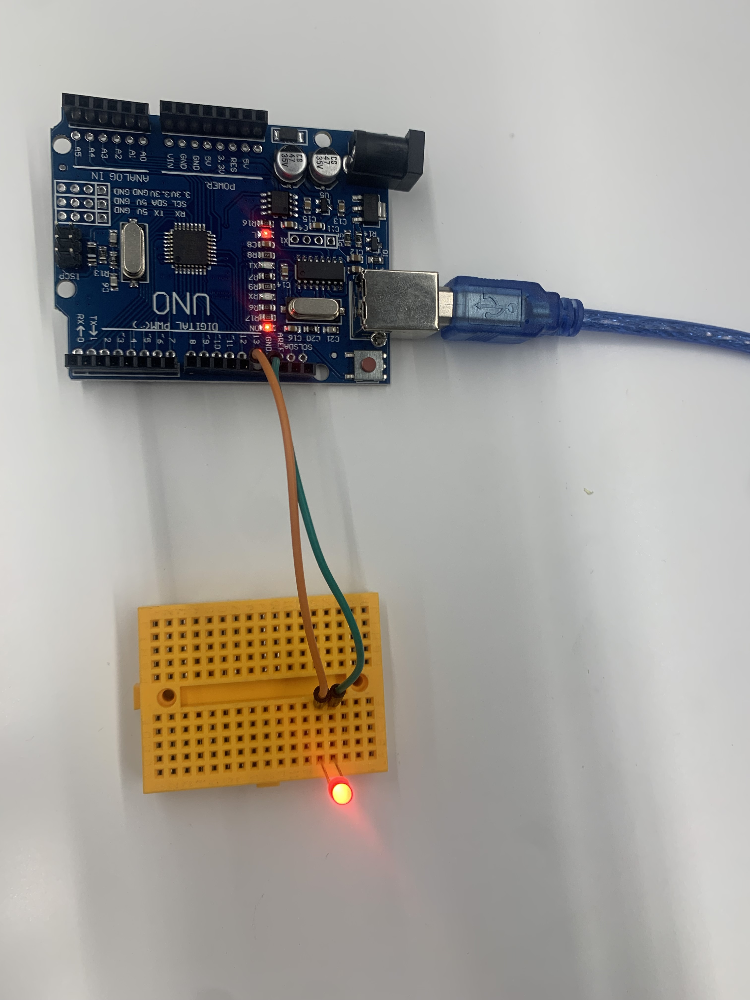

第2回
グループワークした内容（ポストイット画像）
日常で自分達が不便に感じていることをそれぞれ挙げ、遠隔の捜査で解決できる方法を考えた

自分で考えたアイディア（スケッチ）
スマホ決済の際に支払ったサインで音が鳴る決済アプリが嫌な人ため、スマホ決済で音を鳴らすのではなくするが光るようになったらこの問題を解決できると思った。〈br〉
遊園地や街でトイレのに行きたいと思った時、予想外にその場所が混んでいたが、それ以外の場所はあまり混んでいなかったということがよくある。そこで、自分の近くのトイレでどこが混んでいるのかがわかるものがあったら、より効率よく回転すると思い。今回このアイディアを考えた。